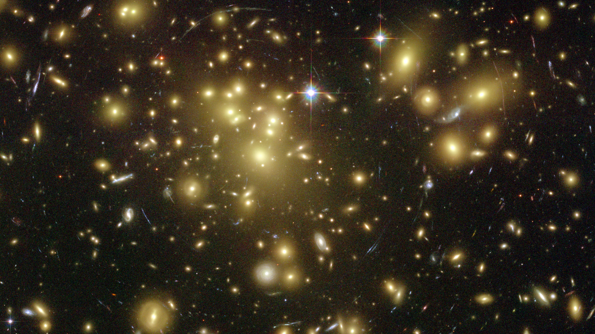
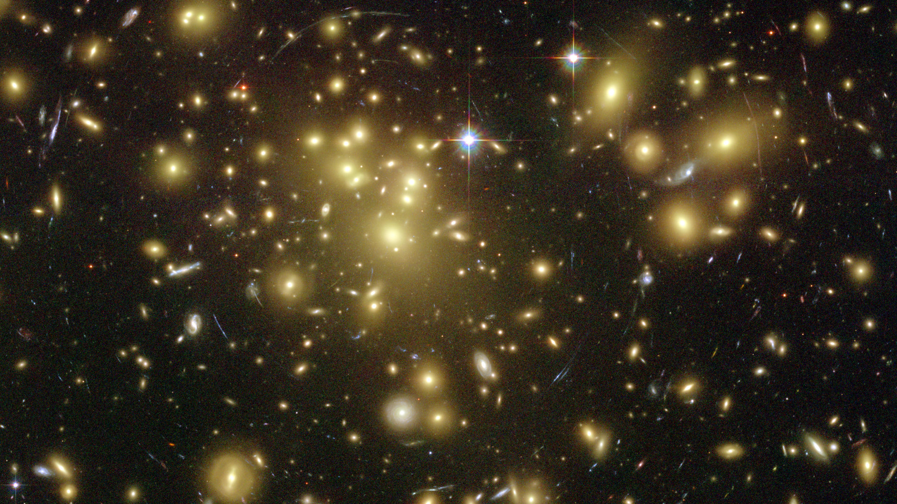

MY INTERESTS

MASSIVE GALAXIES

GALAXIES AT HIGH REDSHIFT

SOMEWHERE, SOMETHING INCREDIBLE IS WAITING TO BE KNOW
SCIENTIFIC VOLUNTEERING
Hello everybody! 😀 I am an astronomer working in Galaxy Formation and Evolution at the University of Valladolid (Spain) with a Distinguished Senior Researcher position. I am also affiliated to the Institute of Astrophysics and Space Sciences (Portugal). I love studying extreme objects such as the most massive galaxies of the Universe or the outermost parts of the galaxies (their superfaint galaxy edges), and anything related to challenge the current frontiers of our Physics theories
¡Hola a todos! 😀 Soy un astrónomo que trabaja en formación y evolución de galaxias en la Universidad de Valladolid (España) como Investigador Distinguido Senior. También estoy afiliado al Instituto de Astrofísica y Ciencias del Espacio (Portugal). Me encanta estudiar objetos extremos como las galaxias más masivas del Universo o las partes más externas de las galaxias (sus superténues bordes), y cualquier concepto que desafie las actuales fronteras de nuestras teorías físicas
University of Nottingham (UK)
University of Salamanca (Spain)
3 Years Course
University of La Laguna / IAC (Spain)
2 Years Course
University of Salamanca (Spain)
5 Years Course
University of Valladolid (Spain)
IA - OAL (Portugal)
University of Lisbon (Portugal)
University of Edinburgh (UK)
University of Edinburgh (UK)
IA-Lisbon (Portugal)
Spanish Astronomical Society
STFC (UK) and IAC (Spain)
Python
IDL
IRAF
GALFIT
SExtractor
Going out with my friends
(Spanish)
(English)
(Spanish)
(Portuguese)
(Spanish)
(English)
Ojos de Oriental, "El problema de los tres cuerpos" (Spanish)
Salamanca en la onda, "XIII Reunión Científica de la Sociedad Española de Astronomía" (Spanish)
Eureka, "XIII Reunión Científica de la Sociedad Española de Astronomía" (Spanish)
A noite é necesaria, "XIII Reunión Científica de la Sociedad Española de Astronomía" (Portuguese)
The quest for galactic relics from the primordial Universe (English and Portuguese)
The quest for galactic relics from the primordial Universe (Italian)
The quest for galactic relics from the primordial Universe (English)
Astrofísicos identificam galáxias dos primórdios do Universo intactas (Portuguese)
A bundle of ultra-compact massive galaxies found (English)
Revealing the origin and nature of the outskirts of stellar megalopolis (English and Portuguese)

MASSIVE GALAXIES
GALAXIES AT HIGH REDSHIFT
SOMEWHERE, SOMETHING INCREDIBLE IS WAITING TO BE KNOW
SCIENTIFIC VOLUNTEERING
Created by BLACKTIE.CO